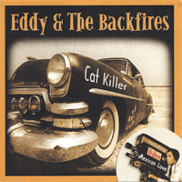

Eddy and the Backfires - Cat Killer (Album, 2006)
01 - I Feel Rockin' (2:34)
02 - I'm Gone (2:09)
03 - Cat Killer (2:50)
04 - Dancing Doll (1:49)
05 - All I Can Do Is Cry (2:14)
06 - High Speed Daddy (2:06)
07 - They Call Me Bad (2:23)
08 - Let's Rock Tonight (2:55)
09 - Tick Tack Baby (3:03)
10 - Mobilin' Baby Of Mine (2:13)
11 - Rockin' An' A Rollin' (2:13)
12 - That's Wild (2:38)
13 - Last Surf (2:02)
14 - Sometimes I Wonder (2:02)
15 - It's So Hard (2:29)
© Rhythm Bomb Records :: [RBR 5638]
Notes
Hannover, Germany.
Ralf 'Eddy' Bergstedt - Lead vocals, Rhythm guitar
Martin 'Nosi' Carlos Nosiadek - Lead guitar
Jürgen Lange - Double bass
Michael 'Vasili' Kinast - Drums
With bonus video included on CD
All songs recorded and mastered at Lightnings Recording Service, Berlin.
Songs are credited to Backfires: "I Feel Rockin'", "I'm Gone", "Cat Killer", "High Speed Daddy", "That's Wild", "Last Surf", "Sometimes I Wonder", "It's So Hard"
Song is credited to Jimmy Grubbs: "Let's Rock Tonight"
Song is credited to Rodney Morris: "Mobilin' Baby Of Mine"
Song is credited to Wayne Walker: "All I Can Do Is Cry"
Song is credited to Curt Longley* (as with CD art; but perhaps should be Curley Langley), Art Pedivan: "Rockin' An' A Rollin'"
Song is credited to Art Adams, Betty Stone: "Dancing Doll"
Songs are credited to Don Martino: "They Call Me Bad", "Tick Tack Baby"
reference information: Discogs®
Review
020/366 (Project 366)
Pretty authentic Rockabilly band. A lot of gems: authentic rockin' and rollin', wild country rockabilly, hillbilly beat, crazy rhythm, rustic ballads, instrumental rockin' surf and even gloss. All is possible to meet there.
Coolness, might, driving lead guitar, raw twangin' and magic of rhythm guitar. Sounds like a power act with twists and frills. With a variety of both mood and recording quality. It is a bit like a show. Thanks to the drums and double bass - boppin' and hopping around. Cover versions of famous songs performed stylistically good. For example, "They Call Me Bad" and "Tick Tack Baby". But despite the fact that the album actually has different shades - these two covers rather out of the band look. Which is more sensed with covers like "Let's Rock Tonight", "Rockin' An' Rollin', "Mobilin' Baby Of Mine". Two other covers - "Dancing Doll" and "All I Can Do Is Cry" - are slightly kind of a theatrical performance with an echo of the original sound.
First song "I Feel Rockin'" is so pretty that almost 'yeah' and sexy! Feel rockin', feel rollin'. Fast authentic rockin' and rollin' Rockabilly with so moody view. Crazy rhythm of second song "I'm Gone" made me mad! Delicious greasy tone, but I am gone to third song "Cat Killer", which is a bizarre story. This title is also name for the album. Quite interesting decision. From a musical point of view, "Cat Killer" is one of the most unusual songs on the album. But featured characterstic chic of guitars. The next original song "High Speed Daddy" is full of band style. All previously described three songs are combined in one stylish track there. Another self-penned song is "That's Wild". Twelfth track is one of my favourites. Sounds a bit like a Country Bop but still rockin' and rollin'. That is wild rockabilly! And even more wild with next track "Last Surf" - drivin' instrumental! Surfin' and rockin'! The fourteenth and fifteenth songs continue the mood. But already with slightly nervous beat and tune. "Sometimes I Wonder" and "It's So Hard" reflect many of the things that artists such as Johnny Burnette performed so well.